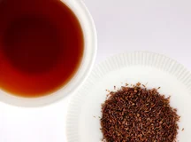
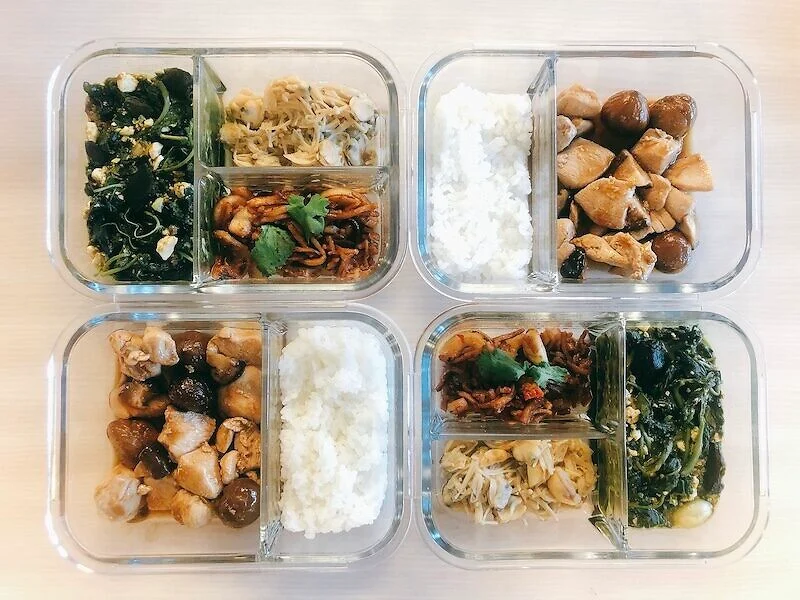
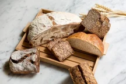
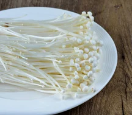
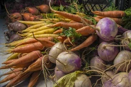

■ 熱門文章

南非國寶茶是什麼？對人體有哪些益處？
被視為一種健康飲品的南非國寶茶，源自於非洲南部，南非國寶茶還含有多種營養成份，被科學家認為對人體有許多益處，待會就要大家分享是哪些益處。

每餐營養怎麼吃？『 均衡飲食』菜單幫你搭配！
每天三餐要如何掌握攝取均衡的營養呢？依據國民健康署公布的每日飲食指南，建議每天應攝取的六大類食物，包含全穀雜糧、豆魚肉蛋、蔬菜、水果、乳品以及堅果種子等，並透過「我的餐盤」的圖像呈現每餐的食用比例。
麵包發酵18小時超麻煩欸！【味覺的感動】主廚：因為好吃啊！
講到「味覺的感動」 東京健康麵包，就得提到這家麵包店的兩位靈魂人物，一位是以獨門作法烘焙出「世界不存在的麵包」的職人——志賀勝榮。

韓國金針菇含致命李斯特菌？避免感染應如何處理食品？
近日 LINE 瘋傳一則資訊，說明「有人吃了韓產金針菇竟致死」，事實上確實有「韓製金針菇外銷美國，李斯特菌污染被召回」、「30 例住院、4 人死亡」的新聞。

只要有優格，就能自製好吃的新鮮軟起司！
起司類型百百種，其中有一種叫做 Labneh，被認為是源自於中東的一種新鮮軟起司，主要是以優格製成，口感吃起來有點像奶油起司，但是脂肪含量與熱量約是一般奶油起司的一半。
■ 每日精選
享受吃，學著放下。日劇《忘卻的幸子》被料理無限治癒所教的事
「想忘記時，就來吃點好吃的吧！」美食至上！心情不好時，吃著美味的料理，是否能讓你忘掉不開心的事，悄悄躲入...
清明掃墓供品、水果要準備哪些？祭拜禁忌有哪些要注意？
清明返鄉祭祖、掃墓在習俗上是僅次於過年的重要時節，台灣掃墓多半依傳統禮節，於國定民族掃墓節前後相約進行，其實心誠則靈...

在根莖類蔬菜中，營養價值最高的是誰？
想要保持健康的飲食，食物的挑選就很重要，而根莖類蔬菜就是經常會出現在健康飲食中的一種食物類型，這些大多都生長在土裡...